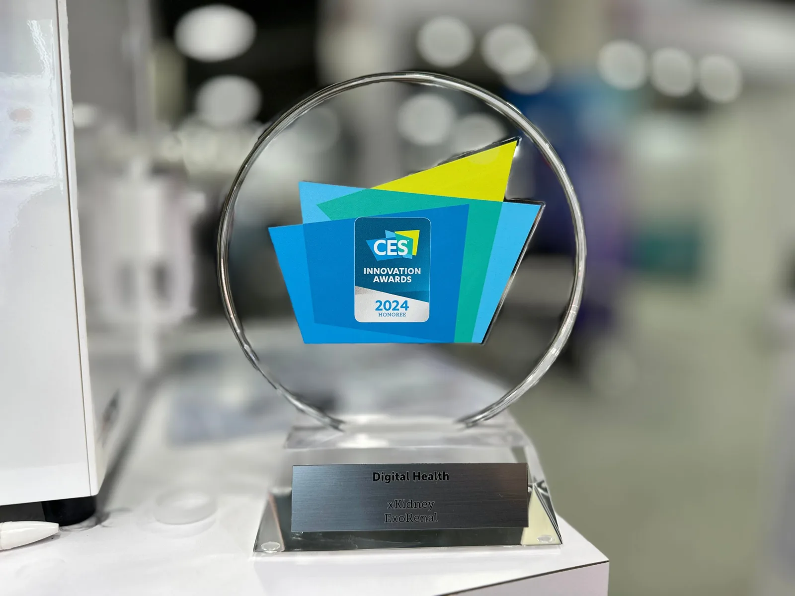
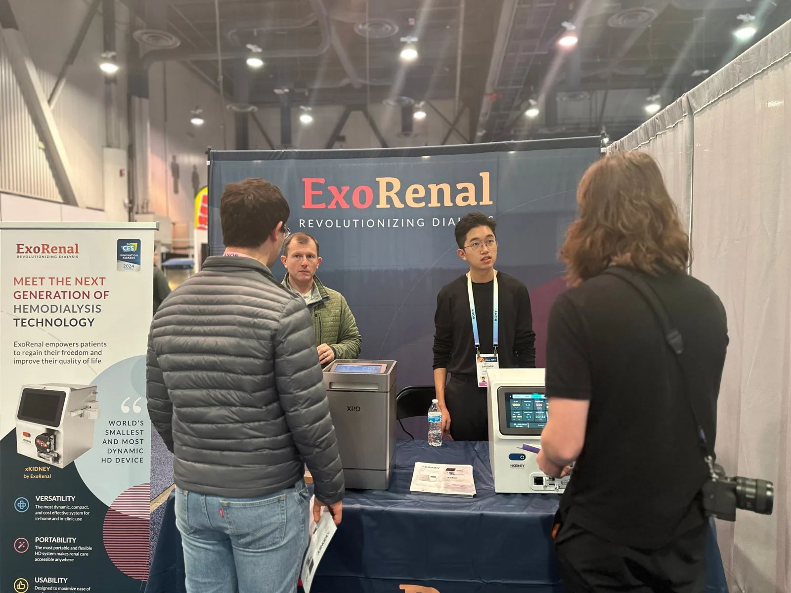
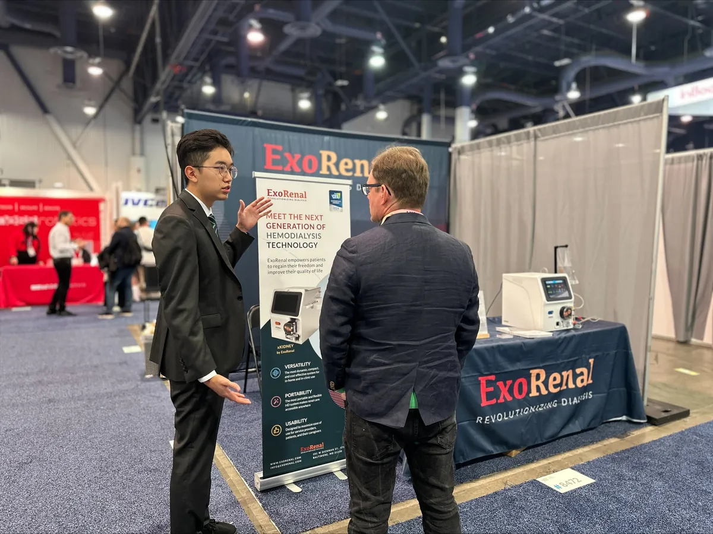
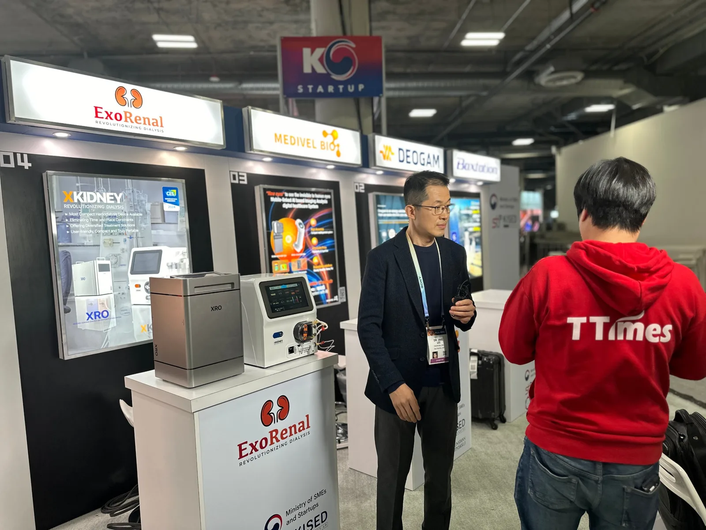
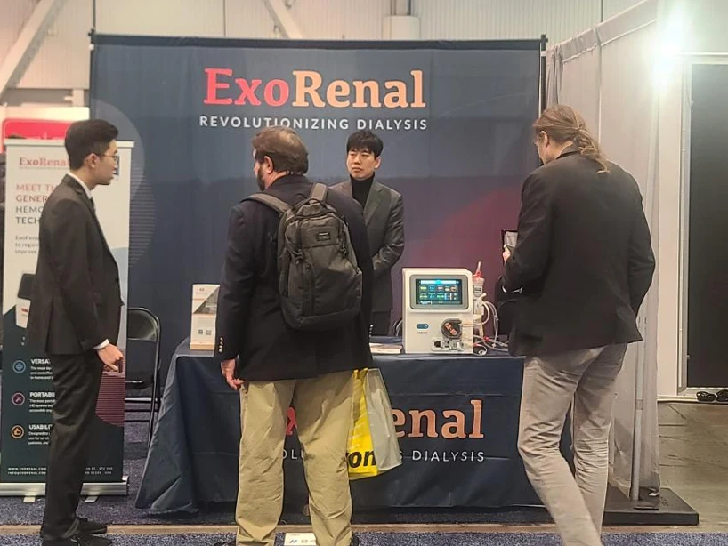
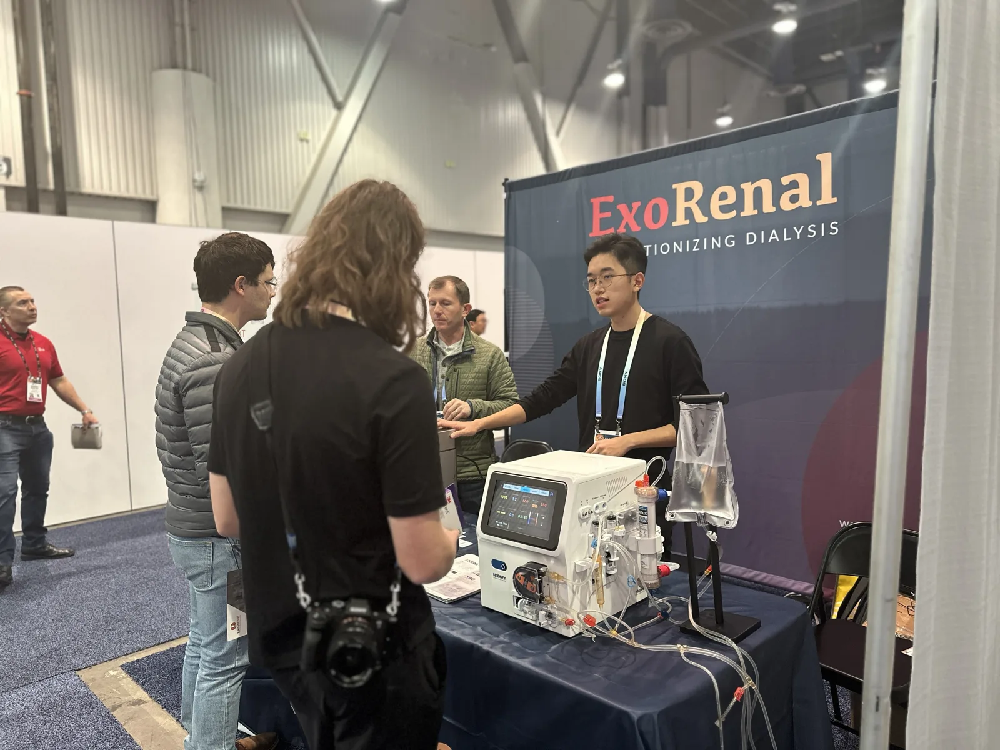
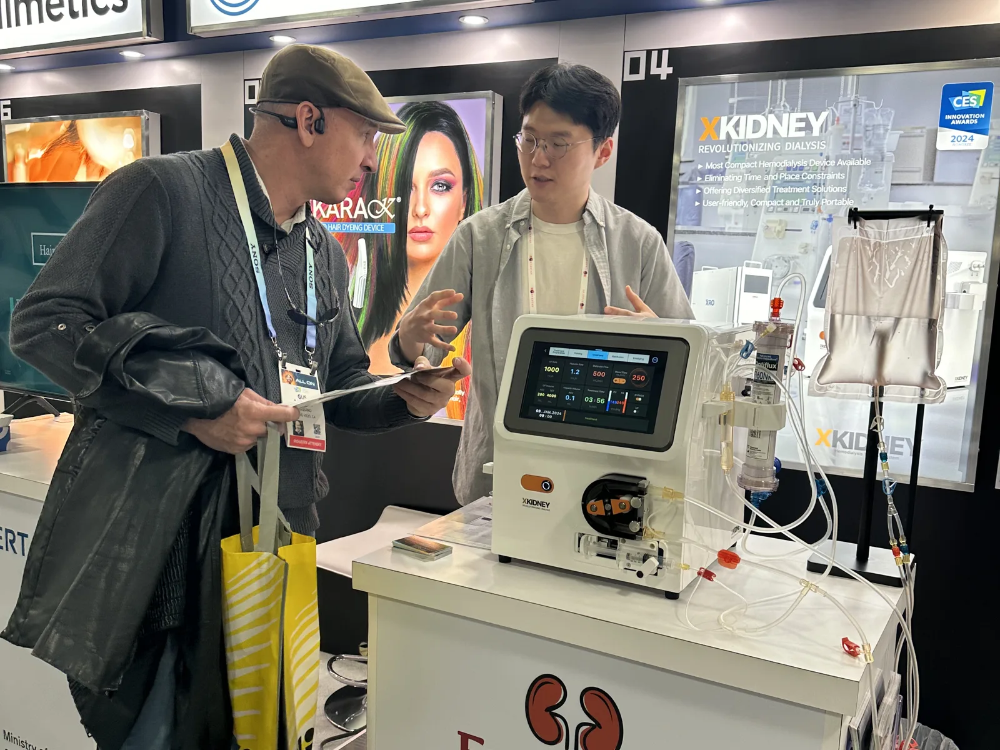

CES 2024 Innovation Award.
XKIDNEY was named a CES 2024 Innovation Awards Honoree in Digital Health.
- Date
- Jan 9–12, 2024
- Venue
- Las Vegas, USA
- Category
- Digital Health

XKIDNEY was named a CES 2024 Innovation Awards Honoree in the Digital Health category at CES, the world's largest technology show. The award recognized a compact, portable hemodialysis system designed to ease the limits of time and place on treatment.
During the show we exhibited XKIDNEY and XRO at two booths, in the Korea Startup pavilion and the Digital Health hall, meeting visitors, investors and press.
Official CES Innovation Awards pageShows the earlier model that won the award.





